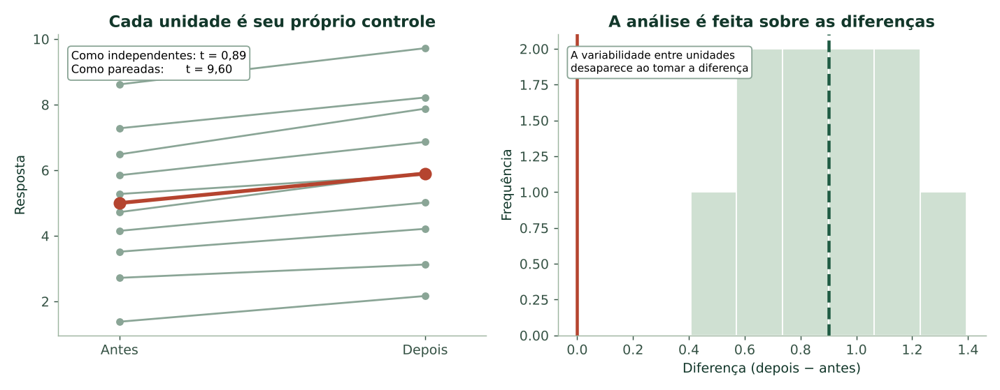
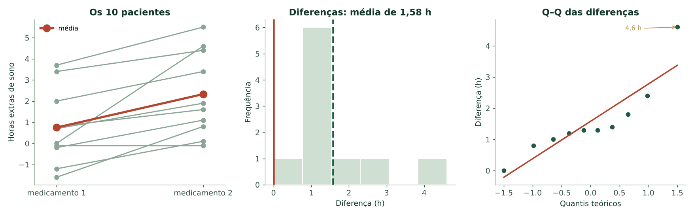

Teste t pareado
Compara duas medidas feitas nas mesmas unidades, analisando as diferenças de cada par.
Comece por aqui
Medir a mesma peça antes e depois de um ajuste, o mesmo paciente com dois medicamentos, o mesmo terreno com duas adubações: nesses casos, as duas medidas não são independentes. Isso parece um problema, mas é uma vantagem: cada unidade serve de controle para si mesma, e toda a variabilidade entre unidades desaparece da conta. O teste t pareado aproveita esse ganho.
Os dados usados nesta ficha são os mesmos que Student analisou em 1908, no artigo que apresentou a distribuição t. Eles vêm de um estudo de Cushny e Peebles (1905) sobre o efeito de dois hipnóticos no sono de dez pacientes. O conjunto sleep do R é um clássico também por isso.
O que é o teste
O procedimento é mais simples do que parece: calcula-se a diferença \(d_i=y_{2i}-y_{1i}\) para cada unidade e aplica-se o teste t de uma amostra a essas diferenças, com valor de referência zero. As duas medidas originais somem da conta; só a diferença importa.

O teste pareado usa \(n-1\) graus de liberdade, contra \(2n-2\) do teste para grupos independentes. Quando as duas medidas são muito correlacionadas, o ganho em precisão compensa de longe. Quando a correlação é baixa, o pareamento pode até piorar o poder — mas, se o delineamento é pareado, a análise tem de ser pareada.
Pressupostos e como verificá-los
| Pressuposto | Por que importa | Como verificar |
|---|---|---|
| Os pares são formados pelo delineamento | Pareamento feito depois, olhando os dados, não é válido. | Protocolo do estudo. |
| Pares independentes entre si | A dependência permitida é só dentro do par. | Delineamento. |
| Normalidade das diferenças | É sobre as diferenças que o teste é feito, não sobre as medidas originais. | Shapiro–Wilk e Q–Q das diferenças. |
| Variável quantitativa com mesma escala nas duas medidas | A diferença precisa fazer sentido. | Natureza das variáveis. |
| Ausência de diferenças extremas influentes | A média das diferenças é sensível. | Boxplot das diferenças; compare com o Wilcoxon. |
| Sem efeito de ordem não controlado | Em estudos cruzados, a ordem pode confundir o efeito. | Aleatorize a ordem das condições. |
Hipóteses e estatística de teste
Em que:
- \(d_i\)
- diferença entre as duas medidas da unidade i
- \(\bar d,\ s_d\)
- média e desvio-padrão das diferenças
- \(n\)
- número de pares (não de medidas)
- \(\mu_d\)
- média populacional das diferenças
- \(\rho\)
- correlação entre as duas medidas da mesma unidade
- \(\sigma_1,\ \sigma_2\)
- desvios-padrão de cada condição
A última expressão mostra de onde vem o ganho: quanto maior a correlação \(\rho\), menor a variância da diferença média. Com \(\rho=0\), o pareamento não ajuda; com \(\rho=0{,}8\), a variância cai para cerca de um quinto da que teria em grupos independentes de mesmo tamanho.
Exemplo numérico, passo a passo
| Paciente | Medicamento 1 | Medicamento 2 | Diferença |
|---|---|---|---|
| 1 | 0,7 | 1,9 | 1,2 |
| 2 | −1,6 | 0,8 | 2,4 |
| 3 | −0,2 | 1,1 | 1,3 |
| 4 | −1,2 | 0,1 | 1,3 |
| 5 | −0,1 | −0,1 | 0,0 |
| 6 | 3,4 | 4,4 | 1,0 |
| 7 | 3,7 | 5,5 | 1,8 |
| 8 | 0,8 | 1,6 | 0,8 |
| 9 | 0,0 | 4,6 | 4,6 |
| 10 | 2,0 | 3,4 | 1,4 |
Média das diferenças: \(\bar d=1{,}58\) h. Desvio-padrão: \(s_d=1{,}23\) h.
Erro-padrão: \(1{,}23/\sqrt{10}=0{,}3890\).
\(t=1{,}58/0{,}3890=4{,}0621\), com 9 graus de liberdade ⇒ valor-p = 0,00283.
IC de 95%: \(1{,}58\pm2{,}262\times0{,}3890=[0{,}700;\ 2{,}460]\) h — todo acima de zero.
Propriedades
- É matematicamente idêntico ao teste t de uma amostra aplicado às diferenças, com \(\mu_0=0\).
- Usa \(n-1\) graus de liberdade, em que \(n\) é o número de pares.
- Não exige que as duas medidas sejam normais, apenas as diferenças.
- Não exige variâncias iguais entre as duas condições.
- Equivale a uma ANOVA de medidas repetidas com duas condições.
- Trocar a ordem da subtração apenas inverte o sinal de \(t\) e do intervalo.
Como interpretar os resultados
| Elemento | O que informa | Cuidado |
|---|---|---|
| Média das diferenças | O efeito, na unidade original. | É o número a reportar. |
| IC da diferença média | Magnitude plausível do efeito. | Se contém zero, o efeito não é distinguível de nenhum. |
| Valor-p | Evidência contra a ausência de efeito. | Não mede a magnitude. |
| d de Cohen pareado | Média dividida pelo desvio-padrão das diferenças. | Costuma ser maior que o d de grupos independentes; informe qual foi usado. |
| Correlação entre as medidas | Quanto o pareamento ajudou. | Correlação alta justifica o delineamento. |
Reporte: número de pares, média e desvio-padrão das diferenças, t, graus de liberdade, valor-p, intervalo de confiança e tamanho do efeito.
Como executar no R e em Python
Onde executar o código em Python
Não é preciso instalar nada: o Google Colab é um computador na nuvem, gratuito, que executa Python pelo navegador e já traz as bibliotecas usadas aqui (numpy, scipy e matplotlib).
t.test() com paired = TRUE pertence ao pacote stats, já instalado com o R. Atenção à ordem dos dados: os dois vetores precisam estar alinhados, com a i-ésima posição de cada um pertencendo à mesma unidade. Dados em formato longo devem ser ordenados pelo identificador antes.
t.test(medicamento2, medicamento1, paired = TRUE)
t.test(medicamento2 - medicamento1, mu = 0) # exatamente o mesmo resultado
Exemplo de aplicação
Contexto dos dados
Dez pacientes receberam dois medicamentos diferentes e, em cada caso, registrou-se quantas horas extras de sono tiveram em relação ao seu padrão habitual. Como cada paciente passou pelas duas condições, as medidas são pareadas. A pergunta é se os dois medicamentos diferem no efeito médio.
Código em R
# Teste t pareado: exemplo completo ----
# Pacote: apenas o stats (já vem com o R). Dados: sleep.
# 1. Dados: horas extras de sono de 10 pacientes com dois medicamentos
# Fonte original: Cushny e Peebles (1905); usados por Student (1908).
medicamento1 <- sleep$extra[sleep$group == 1]
medicamento2 <- sleep$extra[sleep$group == 2]
d <- medicamento2 - medicamento1
data.frame(paciente = 1:10, medicamento1, medicamento2, diferenca = d)
c(media_das_diferencas = mean(d), dp_das_diferencas = sd(d))
# 2. Diagnóstico gráfico: perfis individuais e distribuição das diferenças
par(mfrow = c(1, 2))
matplot(rbind(medicamento1, medicamento2), type = "b", pch = 19, lty = 1, col = "gray50",
xaxt = "n", xlab = "", ylab = "Horas extras de sono")
axis(1, at = 1:2, labels = c("medicamento 1", "medicamento 2"))
lines(c(mean(medicamento1), mean(medicamento2)), col = "red", lwd = 3, type = "b", pch = 19)
hist(d, col = "gray85", xlab = "Diferença (h)", main = ""); abline(v = 0, col = "red", lwd = 2)
par(mfrow = c(1, 1))
# 3. Pressuposto: normalidade das DIFERENÇAS (não das medidas originais)
shapiro.test(d)
qqnorm(d, pch = 19); qqline(d, col = "red", lwd = 2)
# 4. Teste t pareado
t.test(medicamento2, medicamento1, paired = TRUE)
# 5. É exatamente um teste t de uma amostra sobre as diferenças
t.test(d, mu = 0)
# 6. O que se perderia ignorando o pareamento
t.test(medicamento2, medicamento1, var.equal = TRUE)
cor(medicamento1, medicamento2) # é esta correlação que o pareamento aproveita
# 7. Tamanho do efeito
mean(d) / sd(d)
# 8. Alternativas não paramétricas
wilcox.test(d, mu = 0)
binom.test(sum(d > 0), sum(d != 0)) # teste do sinal
A mesma análise em Python, com os resultados
Cole o código em um notebook do Google Colab ↗ e execute com Shift+Enter. Os valores abaixo são a saída desse código.
# Bibliotecas: numpy, scipy e matplotlib (já instaladas no Google Colab)
import numpy as np
from scipy import stats
import matplotlib.pyplot as plt
# Dados: conjunto sleep (horas extras de sono de 10 pacientes com dois medicamentos).
# Fonte original: Cushny e Peebles (1905), usados por Student (1908).
medicamento1 = np.array([0.7, -1.6, -0.2, -1.2, -0.1, 3.4, 3.7, 0.8, 0.0, 2.0])
medicamento2 = np.array([1.9, 0.8, 1.1, 0.1, -0.1, 4.4, 5.5, 1.6, 4.6, 3.4])
n = len(medicamento1)
d = medicamento2 - medicamento1 # a análise é feita sobre as DIFERENÇAS
print("Paciente medicamento1 medicamento2 diferença")
for i in range(n):
print(f"{i+1:>8} {medicamento1[i]:>12} {medicamento2[i]:>12} {d[i]:>9.1f}")
print(f"\nMédia das diferenças = {d.mean():.4f} h | DP das diferenças = {d.std(ddof=1):.4f} h")
# 1. Estatística de teste: é um teste t de uma amostra aplicado às diferenças
ep = d.std(ddof=1) / np.sqrt(n)
t = d.mean() / ep; gl = n - 1
print(f"\nErro-padrão = {d.std(ddof=1):.4f} / raiz({n}) = {ep:.4f}")
print(f"t = {d.mean():.4f} / {ep:.4f} = {t:.4f} com {gl} gl | p-valor = {2*stats.t.sf(abs(t), gl):.6f}")
print("scipy (pareado):", stats.ttest_rel(medicamento2, medicamento1))
print("scipy (uma amostra sobre as diferenças):", stats.ttest_1samp(d, 0))
# 2. Intervalo de confiança de 95% para a diferença média
tc = stats.t.ppf(0.975, gl); ic = d.mean() + np.array([-1, 1]) * tc * ep
print(f"IC 95% = [{ic[0]:.4f}; {ic[1]:.4f}] h")
# 3. O que se perderia ignorando o pareamento
t_ind = stats.ttest_ind(medicamento2, medicamento1, equal_var=True)
print(f"\nSe os grupos fossem tratados como independentes: t = {t_ind.statistic:.4f}, p-valor = {t_ind.pvalue:.4f}")
r = stats.pearsonr(medicamento1, medicamento2)
print(f"Correlação entre as duas medidas do mesmo paciente: r = {r.statistic:.4f} (p = {r.pvalue:.5f})")
print("É essa correlação que o pareamento aproveita: ela reduz a variabilidade da diferença.")
# 4. Pressuposto: normalidade das diferenças
W, pw = stats.shapiro(d)
print(f"\nShapiro-Wilk das diferenças: W = {W:.4f}, p-valor = {pw:.4f}")
print("Diferenças ordenadas:", np.sort(d))
# 5. Tamanho do efeito
print(f"\nd de Cohen (pareado) = média / DP das diferenças = {d.mean()/d.std(ddof=1):.4f}")
# 6. Alternativas não paramétricas
print("Wilcoxon (posto sinalizado):", stats.wilcoxon(d).pvalue.round(5))
pos = int(np.sum(d > 0))
print(f"Teste do sinal: {pos} diferenças positivas de {int(np.sum(d != 0))} não nulas | p-valor =",
round(2 * stats.binom.sf(pos - 1, int(np.sum(d != 0)), 0.5), 5))
# 7. Poder do teste
delta = abs(d.mean() / d.std(ddof=1)) * np.sqrt(n)
print(f"Poder para o efeito observado (alfa = 0,05): {stats.nct.sf(tc, gl, delta) + stats.nct.cdf(-tc, gl, delta):.4f}")
# 8. Gráficos
fig, ax = plt.subplots(1, 3, figsize=(13, 4))
for i in range(n): ax[0].plot([1, 2], [medicamento1[i], medicamento2[i]], marker="o", color="gray")
ax[0].plot([1, 2], [medicamento1.mean(), medicamento2.mean()], marker="o", color="red", lw=3)
ax[0].set_xticks([1, 2]); ax[0].set_xticklabels(["medicamento 1", "medicamento 2"]); ax[0].set_ylabel("Horas extras de sono")
ax[1].hist(d, bins=6, color="lightgray", edgecolor="white"); ax[1].axvline(0, color="red", lw=2)
ax[1].set_xlabel("Diferença (h)"); ax[1].set_ylabel("Frequência")
stats.probplot(d, dist="norm", plot=ax[2]); ax[2].set_title("Q-Q das diferenças")
plt.show()
Resultados da execução
Paciente medicamento1 medicamento2 diferença
1 0.7 1.9 1.2
2 -1.6 0.8 2.4
3 -0.2 1.1 1.3
4 -1.2 0.1 1.3
5 -0.1 -0.1 0.0
6 3.4 4.4 1.0
7 3.7 5.5 1.8
8 0.8 1.6 0.8
9 0.0 4.6 4.6
10 2.0 3.4 1.4
Média das diferenças = 1.5800 h | DP das diferenças = 1.2300 h
Erro-padrão = 1.2300 / raiz(10) = 0.3890
t = 1.5800 / 0.3890 = 4.0621 com 9 gl | p-valor = 0.002833
scipy (pareado): TtestResult(statistic=np.float64(4.062127683382037), pvalue=np.float64(0.002832890197384273), df=np.int64(9))
scipy (uma amostra sobre as diferenças): TtestResult(statistic=np.float64(4.062127683382037), pvalue=np.float64(0.002832890197384273), df=np.int64(9))
IC 95% = [0.7001; 2.4599] h
Se os grupos fossem tratados como independentes: t = 1.8608, p-valor = 0.0792
Correlação entre as duas medidas do mesmo paciente: r = 0.7952 (p = 0.00596)
É essa correlação que o pareamento aproveita: ela reduz a variabilidade da diferença.
Shapiro-Wilk das diferenças: W = 0.8299, p-valor = 0.0333
Diferenças ordenadas: [0. 0.8 1. 1.2 1.3 1.3 1.4 1.8 2.4 4.6]
d de Cohen (pareado) = média / DP das diferenças = 1.2846
Wilcoxon (posto sinalizado): 0.00391
Teste do sinal: 9 diferenças positivas de 9 não nulas | p-valor = 0.00391
Poder para o efeito observado (alfa = 0,05): 0.9496
| Elemento | Valor | Leitura |
|---|---|---|
| Número de pares | 10 | |
| Média das diferenças | 1,58 h | Desvio-padrão de 1,23 h. |
| Erro-padrão | 0,3890 | |
| t (9 g.l.) | 4,0621 | Valor-p = 0,00283. |
| IC 95% da diferença | [0,700; 2,460] h | Todo acima de zero. |
| d de Cohen pareado | 1,285 | Efeito grande. |
| Correlação entre as duas medidas | r = 0,795 (p = 0,006) | É o que torna o pareamento vantajoso. |
| Se fossem independentes | t = 1,861; p = 0,0792 | Não rejeitaria a 5%. |
| Shapiro–Wilk das diferenças | W = 0,830; p = 0,0333 | Evidência de afastamento da normalidade. |
| Wilcoxon pareado | p = 0,00391 | Mesma conclusão. |
| Teste do sinal | 9 diferenças positivas de 9 não nulas; p = 0,00391 | |
| Poder observado | 0,950 |
Leitura: o medicamento 2 produziu, em média, 1,58 hora a mais de sono que o medicamento 1, com intervalo de confiança entre 0,70 e 2,46 hora. O contraste com a análise não pareada é a lição central deste exemplo: os mesmos dados, tratados como grupos independentes, dariam t = 1,86 e p = 0,079, sem rejeição. A variabilidade entre pacientes é grande, e é justamente ela que a subtração elimina. A correlação de 0,795 entre as duas medidas mede o tamanho desse ganho.
Uma ressalva honesta: o Shapiro–Wilk das diferenças tem p = 0,033, puxado pelo paciente 9, cuja diferença de 4,6 h se destaca das demais (todas entre 0 e 2,4 h). Isso não compromete a conclusão — o Wilcoxon pareado (p = 0,0039) e o teste do sinal (p = 0,0039) chegam ao mesmo resultado, e nas nove diferenças não nulas todas foram positivas. Mas vale reportar o ponto e, se possível, investigar esse paciente.
Erros comuns
| Erro | Como evitar |
|---|---|
| Usar o teste para grupos independentes em dados pareados | Desperdiça o delineamento e costuma perder o efeito, como no exemplo. |
| Usar o teste pareado em grupos independentes | Infla o erro tipo I; os dados não formam pares. |
| Desalinhar os vetores | Confira que a i-ésima posição de cada vetor é a mesma unidade. |
| Testar a normalidade das medidas originais | O pressuposto é sobre as diferenças. |
| Parear depois da coleta, por semelhança nos dados | O pareamento vem do delineamento. |
| Ignorar o efeito de ordem em estudos cruzados | Aleatorize a sequência das condições. |
| Descartar pares com valor faltante sem avaliar o motivo | A perda pode estar associada ao efeito. |
Alternativas e fluxo de trabalho
| Procedimento | Quando preferir |
|---|---|
| Wilcoxon (posto sinalizado) | Diferenças assimétricas ou com valores extremos. |
| Teste do sinal | Só a direção da diferença é confiável. |
| Yuen pareado | Caudas pesadas, mantendo o foco na parte central. |
| ANOVA de medidas repetidas | Três ou mais condições nas mesmas unidades. |
| Teste de McNemar | A resposta pareada é binária. |
| Coeficiente de correlação intraclasse | O interesse é a concordância, e não a diferença média. |
| Bootstrap das diferenças | Amostra pequena e distribuição duvidosa. |
- Confirme que o delineamento é pareado e alinhe os dados.
- Calcule as diferenças e examine histograma, boxplot e Q–Q delas.
- Aplique o teste e calcule o intervalo de confiança.
- Compare com o Wilcoxon se houver dúvida sobre a normalidade.
- Reporte a diferença média, o intervalo e o tamanho do efeito.
Referências desta ficha
- STUDENT [GOSSET, William Sealy]. The probable error of a mean. Biometrika, v. 6, n. 1, p. 1-25, 1908.
- CUSHNY, Arthur R.; PEEBLES, A. Roy. The action of optical isomers: II. Hyoscines. The Journal of Physiology, v. 32, n. 5-6, p. 501-510, 1905. (Fonte original dos dados
sleep.) - COHEN, Jacob. Statistical power analysis for the behavioral sciences. 2. ed. Hillsdale: Lawrence Erlbaum, 1988.
- MONTGOMERY, Douglas C. Design and analysis of experiments. 10. ed. Hoboken: Wiley, 2019.
- MORETTIN, Pedro Alberto; BUSSAB, Wilton de Oliveira. Estatística básica. 9. ed. São Paulo: Saraiva, 2017.
- HOLLANDER, Myles; WOLFE, Douglas A.; CHICKEN, Eric. Nonparametric statistical methods. 3. ed. Hoboken: Wiley, 2014.
- R CORE TEAM. R: a language and environment for statistical computing. Vienna: R Foundation for Statistical Computing, 2026. Disponível em: https://www.r-project.org/. (Função
t.testcompaired = TRUE, pacotestats.) - POSIT TEAM. RStudio: integrated development environment for R. Boston: Posit Software, PBC. Disponível em: https://posit.co/download/rstudio-desktop/.
- VIRTANEN, Pauli et al. SciPy 1.0: fundamental algorithms for scientific computing in Python. Nature Methods, v. 17, p. 261-272, 2020. DOI: 10.1038/s41592-019-0686-2. (Funções do módulo
scipy.stats.) - HARRIS, Charles R. et al. Array programming with NumPy. Nature, v. 585, p. 357-362, 2020. DOI: 10.1038/s41586-020-2649-2.
- HUNTER, John D. Matplotlib: a 2D graphics environment. Computing in Science & Engineering, v. 9, n. 3, p. 90-95, 2007.
- GOOGLE. Google Colaboratory. Disponível em: https://colab.research.google.com/.
- As figuras desta ficha foram elaboradas pelo autor.

Prof. Dr. Cássius Henrique Xavier Oliveira
Professor · ICTIN/UFLA · Estatística, Confiabilidade e Ciência de Dados.
Conheça minha trajetória e projetos →